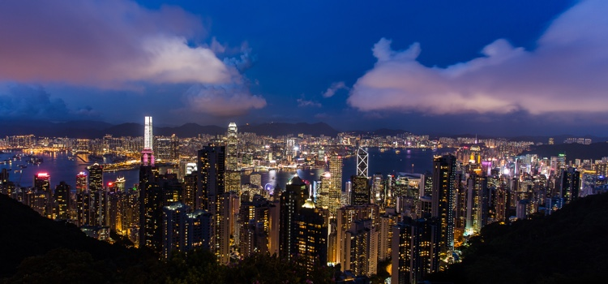
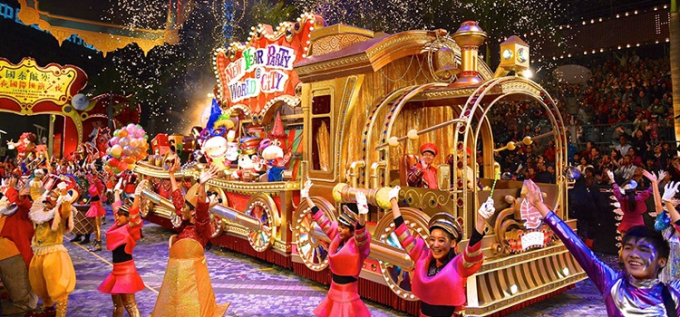

介绍
香港是中华人民共和国成立的特别行政区，坐落于中国广东省南部珠江口东面，由香港岛、九龙半岛、大屿山及新界（包括262个离岛）组成，总面积超过1,105平方公里。虽然香港是一个「弹丸之地」，却拥有「东方之珠」的美誉。

约二百年前，香港只是一个天然资源缺乏的小渔村，在1842年满清政府战败于鸦片战争后，香港成为英国的殖民地。在英国的统治下，香港逐渐发展为重要的贸易港口，加上20世纪中旬大量难民逃往香港，为香港带来充足的劳动力，使香港经济于上世纪后期创下辉煌一页，是亚洲四小龙之一。至1997年，中国政府对香港恢复行使主权。近年香港被定位为亚洲国际都会，继续成为重要的商业、旅游、航空、海运和物流枢纽。
对旅客来说，香港是一个购物及美食天堂；对商家来说，香港是一个世界金融中心；对上班族来说，香港是一个奋斗之城；对年轻人说，香港是一个不夜城；对您来说，香港是什么？
公众假期及节庆
香港是个中西文化荟萃之地，集合各具特色的节庆，所以香港的节日包涵了中国传统节庆及西方节日，让市民尽情享受节日的欢乐。
农历新年 农历正月初一
农历新年被华人地区视为新一年的开始，您可以跟家人朋友一起，在香港共贺新岁，参加国际花车巡游行大运、观看维港的璀璨烟花、逛逛热闹地道的春节花巿等等。

长洲太平清醮 农历四月初五至四月初九
长洲太平清醮是长洲一年一度的祭祀活动，这不只是国家级非物质文化遗产，更获美国《时代周刊》杂志网站选为「全球十大古怪节日」之一。节庆的重点节目是会景巡游，小孩装扮为古今人物或传说中的角色，站在附有支架的手推花车上，在岛上巡游。巡游后当晚最后一个高潮项目就是「抢包山」比赛，参加者爬上用竹棚建成的包山，尽他们的所能抢夺挂平安包。

端午节 农历五月初五
端午节期间，您除了可以品尝应节粽子，也可观赏龙舟竞渡活动及参与嘉年华，如参与在中环海滨举行的香港龙舟嘉年华，藉此感受节日气氛。
万圣节 10月31日
西洋传统上认为万圣节是鬼怪世界最接近人间的日子，香港多个地方都有各色各样的的万圣节活动，您可穿上奇装异服，投身兰桂坊的哇鬼派对或大闹香港主题乐园的哈啰喂全日祭及迪士尼黑色世界。
圣诞节 12月25日
圣诞节是纪念耶稣降生的节日，您可到多个地区观赏圣诞灯饰，如尖沙咀海傍、品赏节日美食、逛逛圣诞市集等，与亲朋好友共度难忘西方节日。